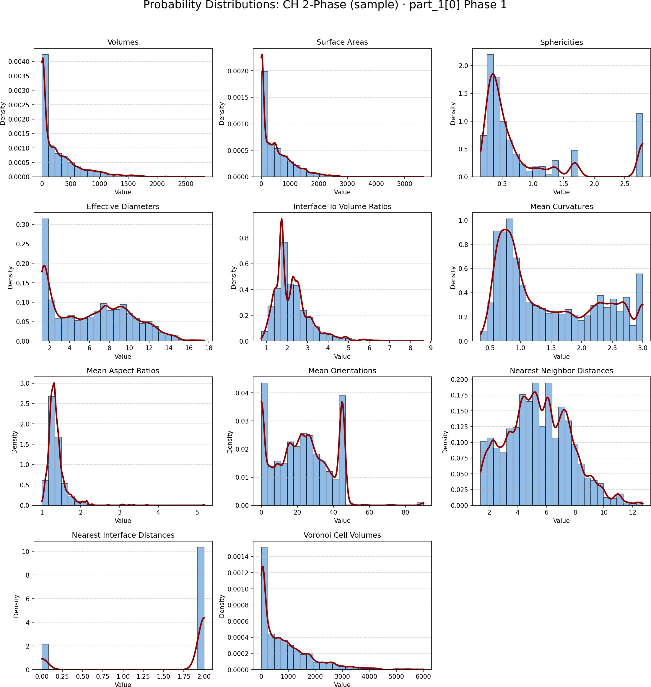
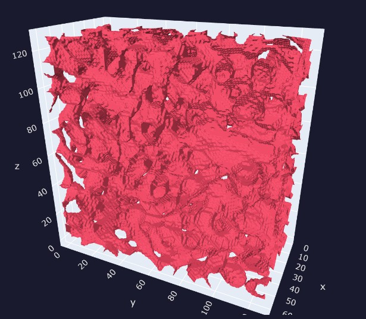

05
Results
PyAMorph successfully demonstrated high-fidelity reconstruction and automated statistical characterisation of complex porous microstructures. The framework extracted 11 morphometric distributions per phase over an ensemble of segmented volumes.

FIG 5.1
3D porous microstructure generated via True 3D Robust Chan-Vese segmentation (φ < 0 inside).
Rendered as a marching-cubes isosurface on an AMReX MultiFab grid.

FIG 5.2
Probability distributions of 11 morphometric descriptors (CH 2-Phase segmentation).
KDE curves (red) are fitted to each descriptor across the particle ensemble.
V
Volume
Voxel-summed solid phase volume per particle
A
Surface Area
Marching-cubes triangle area integration
ψ
Sphericity
Ratio of sphere surface area to actual surface area
d
Eff. Diameter
Equivalent sphere diameter from volume
κ
Mean Curvature
Integrated mean curvature over the surface
α
Aspect Ratio
Bounding-box principal axis ratio

FIG 5.3
Solid-phase isosurface of the full 3D reconstructed volume (CH 2-Phase).
The irregular pore network topology is faithfully captured by the zero-level set.

FIG 5.4
Probability distributions of 11 morphometric descriptors for Phase 1 particles.
KDE curves (red) are fitted to each descriptor across the full particle ensemble.